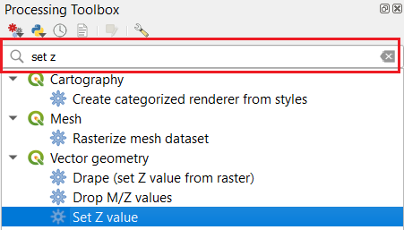
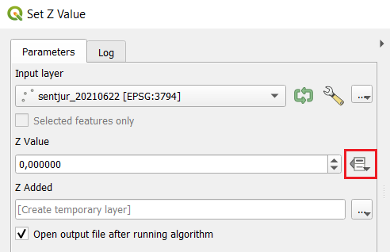
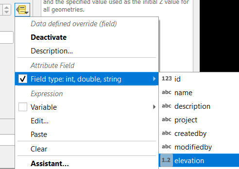

Izbrana QGIS orodja
Opisana so nekatera standardna orodja, ki so vključena v QGIS in jih potrebujemo pri delu z vtičnikom. Orodja so del „Processing Toolbox“-a (meni ), kjer so razdeljena v več skupin. Najlažje jih poiščemo z iskalnikom.

Iskanje orodja
Set Z value
Orodje izbranemu točkovnemu sloju določi Z vrednost, tako da je rezultat 3D sloj (koordinate so zapisane v obliki X,Y,Z). Tipično se določi Z vrednost na podlagi vrednosti v določenem polju.

Za določitev Z na podlagi vrednosti polja, uporabimo dodatne možnosti

Nato izberemo
3D točkovni sloj potrebujemo pri uvozu točk in višin ter kadar rišemo novo 3D linijo na podlagi 3D točk.